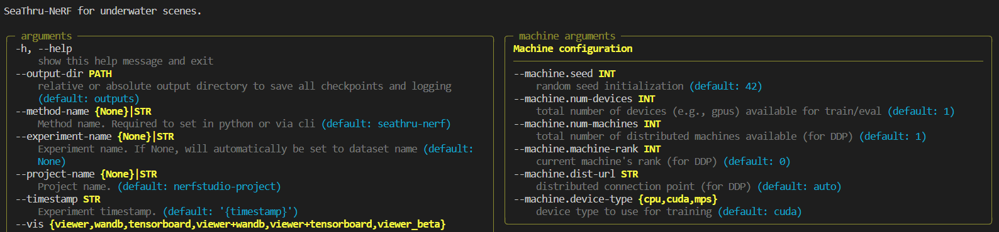

Usage
As this approach built-upon nerfstudio, you can use the full functionality of the library. Therefore please get familiar with the basic commands of this library. You can find the documentation here.
Below, you can find some examples of how to use this library. I will run you through basic training and rendering commands. Additionally I will include an example of how to use the feature of adding synthetic water to a scene.
Datasets
Example dataset
The Seathru-NeRF dataset was used for all examples and results in this documentation. It is a good starting point to experiment with and it can be downloaded here.
Using your own datasets
If you want to use your own dataset, please refer to the guide here.
Training
🌟🌟🌟It’s time to train your first subsea-NeRF🌟🌟🌟
To get an overview of the training options, you can use the help command:
ns-train setahru-nerf --help
The output should look something like this:
Note that the image above is cut off. If you run this command on your machine, you can see all the parameters you can specify
when training the implemented Subsea-NeRF. The default options should do fine on most scenes. One thing I strogly recommend is to use the
--vis wandb option, as this will allow you to log training on W&B. (there is also an option for
tensorboard) If you specify this option, do not forget to provide your API key as well.
If you want to train the implemented subsea-NeRF model on the IUI3-RedSea scene of the Seathru-NeRF dataset, that can be downloaded following the instructions above, you can use the following command:
ns-train seathru-nerf --vis wandb --data <path_to_Seathru_NeRF_dataset>/IUI3-RedSea
On your wandb page you can then see. something that looks like the following:

All the panels can be used to inspect the training process. They are very informative and can give you a good sense of the progress of model training. Make sure to check them out! ✅
When specifying --vis viewer+wandb, you can additionally see a live view of the scene during the training process in the
interactive viewer built into nerfstudio. See the documentation here
and this instructional video to use the viewer (provided by the nerfstudio team):
Rendering
After having trained the Subsea-NeRF, you can use it to render videos from arbitrary camera trajectories of the scene. Make sure to first locate the config.yml of the trained model as you need to pass the path to the rendering script. This file can be found in the output folder created when training the NeRF. Due to the underlying image formation model that allows us to seperate between the objects and the water within a scene, you need to choose the kind of video you want to render. The following options exist:
rgb: To render the reconstructed scene.
J: To render the clear scene (water effect removed).
direct: To render the attenuated clear scene.
bs: To render the backscatter of the water within the scene.
depth: To render the depthmaps of the scene.
accumulation: To render the object weight accumulation maps of the scene.
For a detailed explanation of the arguments that can be specified when rendering, you can use the help command:
ns-render --help
If you want to render out an RGB video of a scene where the camera trajectory is interpolated between the evaluation images of the dataset, a command looks similar to the following:
ns-render interpolate --load-config <path_to_config.yml> --rendered-output-names rgb --output-path <desired_path_for_output>
Some results of example renderings are provided in the Results section.